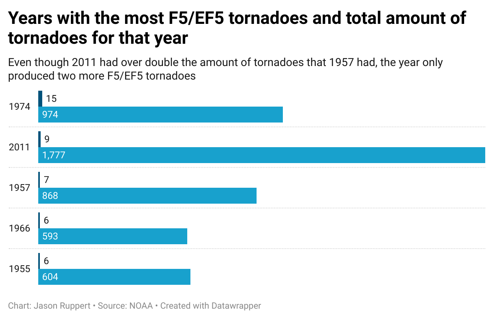

Tornadoes and their destructive power have always been something that has caught the attention of the public. Whether that be through the fear of what the weather behemoths can do, or how they have been portrayed in modern media, like in the Twister movie franchise, these dangerous phenomena have been the source of many despairing days in history. However, the power that tornadoes have become so popular for has seem to have gone missing.
Since the National Oceanic and Atmospheric Administration (NOAA) started tracking and giving ratings to tornadoes in the 1950s, there has been a constant uptick in the total amount of tornadoes that hit the U.S. This increase in the total number of tornadoes has not meant an increase in the amount of high-rating tornadoes. In fact, the U.S. is currently in its longest drought of F5/EF5 tornadoes since the NOAA started tracking tornadoes. A contributing factor to this downturn could be a change in rating system for tornadoes.
The rating system for tornadoes was originally developed by Dr. Ted Fujita, hence the Fujita or F-Scale, and based all ratings on the damage left behind by tornadoes. It was a system that used what was, or wasn’t, left behind which was used to assign a wind speed, and therefore a rating, to the tornado being studied. This system, though, had its flaws.
For instance, if a tornado completely destroyed a home and left nothing but the foundation, that tornado was always given a rating of F5. This didn’t take into account how the house was built, or if there were underlying structural problems with whatever the tornado destroyed. This defect was known by tornado experts and it directly led to the introduction of the Enhanced Fujita (EF) scale in 2007. This made it so a lot more research went into determining a rating for a tornado based off of the destruction it left behind.
Instead of tornadoes automatically being assigned an F5 rating for destroying a house, tornado experts are looking more into what it destroyed and if it really would have taken high powered winds to destroy certain houses. This also changed the necessary wind speed for each tornado rating. Under the original F-scale, wind speeds between 262-317 mph were needed to be considered an F5 tornado. When the switch was made to the EF-scale, the wind speed needed to be registered to given an EF5 rating was changed to at or exceeding 200 mph. These changes sent reverberations in the tornado community.
“We are seeing a lot of tornadoes that completely destroy houses which would be given an automatic F5 rating under the old system,” says Dr. Jana Houser, a tornado expert currently doing research at The Ohio State University. “However, when looking more closely at the houses these tornadoes are destroying, it isn’t clear that high powered winds are necessary for levelling these houses and because of that, our raters do not want to give these tornadoes an EF5 rating, even though they absolutely would have under the old system.”
What about climate change? Is that having any effect on tornadoes like it has been with hurricanes? Human powered climate change has had a large impact on many extreme weather events, but is it also having an impact on tornadoes? Surprisingly, no.
According to Dr. Houser, climate change, while increasing the amount of storms that create tornadoes, has done nothing to increase the formation of funnel clouds that lead to tornadoes. This doesn’t mean that human modernity hasn’t had an effect on tornadoes.
On average, powerful tornadoes, those being rated EF4 and EF5, have longer paths of destruction. However, a tornado requires a strong start in order to have a long path. As humans build more structures, land becomes less flat and more “cluttered”. All of this friction causes early spin cycles to be hindered, leading to less powerful tornadoes in the long run.
Are humans completely to blame for this lack of powerful tornadoes? The answer to that question is still debated by many tornado experts. “There is still much about tornadoes that we do not know.” finished Dr. Houser. “Things are always changing when studying tornadoes but that is what makes them so interesting.”
There will probably never be a concrete answer as to why there has been a historic lack of powerful tornadoes in recent years, but that is what makes this research so important. This trend will be broken and devastating EF5 tornadoes will return. When will that happen? No one knows. But when they return, all new data will be available to learn even more about tornado formation and maybe answer the questions being posed now while powerful tornadoes have gone missing.